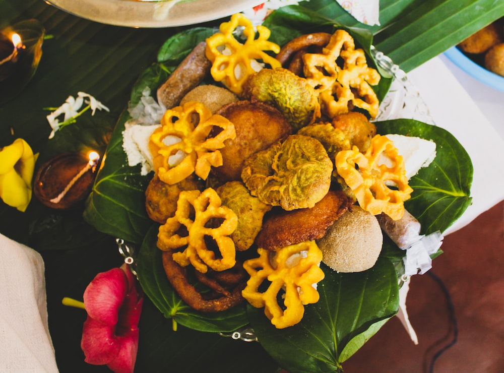

Kokis
Kokis are Sri Lankan traditional celebratory cookies. It served for many cultural event. Especially it makes for Sinhala and Hindu New Year in April.
This is crunchy, savoury snack. it is made with a mould, and you need to have a mould to make kokis.

Ingredients
- 250g rice flour
- 30g all purpose flour
- 950ml Full fat coconut milk
- 1/2 tsp Salt
- 1/2 tsp Tumeric
- 1 tsp Sugar
- 60ml Water
- Oil
How To Prepare
- Step 01
- Add the rice flour, all purpose flour, tumeric, salt and sugar to a bowl and whisk to comibne.
- Step 02
- Add the coconut milk and water a little at a time and whisk until thick, smooth batter.
- Step 03
- Heat the coconut oil in a deep frying pan over a medium heat until you can insert chopstick(wooden) into the oil and bubbles immediately start to form around it.
- Step 04
- Heat the kokis mould in the oil for 15 seconds, then gently shake the mould to remove excess oil.
- Dip the mould into the batter until the batter touches the upper rim of the mould, then immediately dip the mould with batter into the hot oil.
- Step 05
- Fry with the mould for about 1 minutes to set the shape, then lift and remove the mould and continue frying until golden yellow and crispy about 45 seconds.
- Step 06
- Transfer to paper towel-lined plate and repeat with the remaining batter/
- Step 07
- Let the kokis cool completely before serving. Leftover kokis will keep an airtight container at room temperature for upto 5 days.